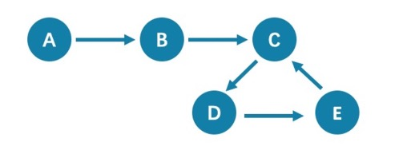

FAQ¶
This topic lists the frequently asked questions for using NebulaGraph 3.0.1. You can use the search box in the help center or the search function of the browser to match the questions you are looking for.
If the solutions described in this topic cannot solve your problems, ask for help on the NebulaGraph forum or submit an issue on GitHub issue.
About manual updates¶
"Why is the behavior in the manual not consistent with the system?"¶
NebulaGraph is still under development. Its behavior changes from time to time. Users can submit an issue to inform the team if the manual and the system are not consistent.
Note
If you find some errors in this topic:
- Click the
pencilbutton at the top right side of this page. - Use markdown to fix this error. Then click "Commit changes" at the bottom, which will start a Github pull request.
- Sign the CLA. This pull request will be merged after the acceptance of at least two reviewers.
About legacy version compatibility¶
X version compatibility
Neubla Graph 3.0.1 is not compatible with NebulaGraph 1.x nor 2.0-RC in both data formats and RPC-protocols, and vice versa. To upgrade data formats, see Upgrade NebulaGraph to the current version. Users must upgrade all clients.
About execution errors¶
"How to resolve the error SemanticError: Missing yield clause.?"¶
Starting with NebulaGraph 3.0.0, the statements LOOKUP, GO, and FETCH must output results with the YIELD clause. For more information, see YIELD.
"How to resolve the error Zone not enough!?"¶
From NebulaGraph version 3.0.0, the Storage services added in the configuration files CANNOT be read or written directly. The configuration files only register the Storage services into the Meta services. You must run the ADD HOSTS command to read and write data on Storage servers. For more information, see Manage Storage hosts。
"How to resolve the error To get the property of the vertex in 'v.age', should use the format 'var.tag.prop'?"¶
From NebulaGraph version 3.0.0, patterns support matching multiple tags at the same time, so you need to specify a tag name when querying properties. The original statement RETURN variable_name.property_name is changed to RETURN variable_name.<tag_name>.property_name.
"How to resolve [ERROR (-1005)]: Used memory hits the high watermark(0.800000) of total system memory.?"¶
The reason for this error may be that system_memory_high_watermark_ratio specifies the trigger threshold of the memory high watermark alarm mechanism. The default value is 0.8. If the system memory usage is higher than this value, an alarm mechanism will be triggered, and NebulaGraph will stop querying.
Possible solutions are as follows:
- Clean the system memory to make it below the threshold.
- Modify the Graph configuration. Add the
system_memory_high_watermark_ratioparameter to the configuration files of all Graph servers, and set it greater than0.8, such as0.9.
"How to resolve the error Storage Error E_RPC_FAILURE?"¶
The reason for this error is usually that the storaged process returns too many data back to the graphd process. Possible solutions are as follows:
- Modify configuration files: Modify the value of
--storage_client_timeout_msin thenebula-graphd.conffile to extend the connection timeout of the Storage client. This configuration is measured in milliseconds (ms). For example, set--storage_client_timeout_ms=60000. If this parameter is not specified in thenebula-graphd.conffile, specify it manually. Tip: Add--local_config=trueat the beginning of the configuration file and restart the service. - Optimize the query statement: Reduce queries that scan the entire database. No matter whether
LIMITis used to limit the number of returned results, use theGOstatement to rewrite theMATCHstatement (the former is optimized, while the latter is not). - Check whether the Storaged process has OOM. (
dmesg |grep nebula). - Use better SSD or memory for the Storage Server.
- Retry.
"How to resolve the error The leader has changed. Try again later?"¶
It is a known issue. Just retry 1 to N times, where N is the partition number. The reason is that the meta client needs some heartbeats to update or errors to trigger the new leader information.
"How to resolve [ERROR (-1005)]: Schema not exist: xxx?"¶
If the system returns Schema not exist when querying, make sure that:
- Whether there is a tag or an edge type in the Schema.
- Whether the name of the tag or the edge type is a keyword. If it is a keyword, enclose them with backquotes (`). For more information, see Keywords.
Unable to download SNAPSHOT packages when compiling Exchange, Connectors, or Algorithm¶
Problem description: The system reports Could not find artifact com.vesoft:client:jar:xxx-SNAPSHOT when compiling.
Cause: There is no local Maven repository for storing or downloading SNAPSHOT packages. The default central repository in Maven only stores official releases, not development versions (SNAPSHOTs).
Solution: Add the following configuration in the profiles scope of Maven's setting.xml file:
xml
<profile>
<activation>
<activeByDefault>true</activeByDefault>
</activation>
<repositories>
<repository>
<id>snapshots</id>
<url>https://oss.sonatype.org/content/repositories/snapshots/</url>
<snapshots>
<enabled>true</enabled>
</snapshots>
</repository>
</repositories>
</profile>
"How to resolve [ERROR (-7)]: SyntaxError: syntax error near?"¶
In most cases, a query statement requires a YIELD or a RETURN. Check your query statement to see if YIELD or RETURN is provided.
"How to resolve the error can’t solve the start vids from the sentence?"¶
The graphd process requires start vids to begin a graph traversal. The start vids can be specified by the user. For example:
```ngql
GO FROM ${vids} ... MATCH (src) WHERE id(src) == ${vids}
The "start vids" are explicitly given by ${vids}.¶
```
It can also be found from a property index. For example:
```ngql
CREATE TAG INDEX IF NOT EXISTS i_player ON player(name(20));¶
REBUILD TAG INDEX i_player;¶
LOOKUP ON player WHERE player.name == "abc" | ... YIELD ... MATCH (src) WHERE src.name == "abc" ...
The "start vids" are found from the property index "name".¶
```
Otherwise, an error like can’t solve the start vids from the sentence will be returned.
"How to resolve the error Wrong vertex id type: 1001?"¶
Check whether the VID is INT64 or FIXED_STRING(N) set by create space. For more information, see create space.
"How to resolve the error The VID must be a 64-bit integer or a string fitting space vertex id length limit.?"¶
Check whether the length of the VID exceeds the limitation. For more information, see create space.
"How to resolve the error edge conflict or vertex conflict?"¶
NebulaGraph may return such errors when the Storage service receives multiple requests to insert or update the same vertex or edge within milliseconds. Try the failed requests again later.
"How to resolve the error RPC failure in MetaClient: Connection refused?"¶
The reason for this error is usually that the metad service status is unusual, or the network of the machine where the metad and graphd services are located is disconnected. Possible solutions are as follows:
- Check the metad service status on the server where the metad is located. If the service status is unusual, restart the metad service.
- Use
telnet meta-ip:portto check the network status under the server that returns an error.
- Check the port information in the configuration file. If the port is different from the one used when connecting, use the port in the configuration file or modify the configuration.
"How to resolve the error StorageClientBase.inl:214] Request to "x.x.x.x":9779 failed: N6apache6thrift9transport19TTransportExceptionE: Timed Out in nebula-graph.INFO?"¶
The reason for this error may be that the amount of data to be queried is too large, and the storaged process has timed out. Possible solutions are as follows:
- When importing data, set Compaction manually to make read faster.
- Extend the RPC connection timeout of the Graph service and the Storage service. Modify the value of
--storage_client_timeout_msin thenebula-storaged.conffile. This configuration is measured in milliseconds (ms). The default value is 60000ms.
"How to resolve the error MetaClient.cpp:65] Heartbeat failed, status:Wrong cluster! in nebula-storaged.INFO, or HBProcessor.cpp:54] Reject wrong cluster host "x.x.x.x":9771! in nebula-metad.INFO?¶
The reason for this error may be that the user has modified the IP or the port information of the metad process, or the storage service has joined other clusters before. Possible solutions are as follows:
Delete the cluster.id file in the installation directory where the storage machine is deployed (the default installation directory is /usr/local/nebula), and restart the storaged service.
About design and functions¶
"How is the time spent value at the end of each return message calculated?"¶
Take the returned message of SHOW SPACES as an example:
nGQL
nebula> SHOW SPACES;
+--------------------+
| Name |
+--------------------+
| "basketballplayer" |
+--------------------+
Got 1 rows (time spent 1235/1934 us)
- The first number
1235shows the time spent by the database itself, that is, the time it takes for the query engine to receive a query from the client, fetch the data from the storage server, and perform a series of calculations.
- The second number
1934shows the time spent from the client's perspective, that is, the time it takes for the client from sending a request, receiving a response, and displaying the result on the screen.
Why does the port number of the nebula-storaged process keep showing red after connecting to NebulaGraph?¶
Because the nebula-storaged process waits for nebula-metad to add the current Storage service during the startup process. The Storage works after it receives the ready signal. Starting from NebulaGraph 3.0.0, the Meta service cannot directly read or write data in the Storage service that you add in the configuration file. The configuration file only registers the Storage service to the Meta service. You must run the ADD HOSTS command to enable the Meta to read and write data in the Storage service. For more information, see Manage Storage hosts.
Why is there no line separating each row in the returned result of NebulaGraph 2.6.0?¶
This is caused by the release of Nebula Console 2.6.0, not the change of NebulaGraph core. And it will not affect the content of the returned data itself.
About dangling edges¶
A dangling edge is an edge that only connects to a single vertex and only one part of the edge connects to the vertex.
Dangling edges may appear in NebulaGraph 3.0.1 as the design. And there is no MERGE statements of openCypher. The guarantee for dangling edges depends entirely on the application level. For more information, see INSERT VERTEX, DELETE VERTEX, INSERT EDGE, DELETE EDGE.
"Can I set replica_factor as an even number in CREATE SPACE statements, e.g., replica_factor = 2?"¶
NO.
The Storage service guarantees its availability based on the Raft consensus protocol. The number of failed replicas must not exceed half of the total replica number.
When the number of machines is 1, replica_factor can only be set to1.
When there are enough machines and replica_factor=2, if one replica fails, the Storage service fails. No matter replica_factor=3 or replica_factor=4, if more than one replica fails, the Storage Service fails. To prevent unnecessary waste of resources, we recommend that you set an odd replica number.
We suggest that you set replica_factor=3 for a production environment and replica_factor=1 for a test environment. Do not use an even number.
"Is stopping or killing slow queries supported?"¶
Yes. For more information, see Kill query.
"Why are the query results different when using GO and MATCH to execute the same semantic query?"¶
The possible reasons are listed as follows.
GOstatements find the dangling edges.
RETURNcommands do not specify the sequence.
- The dense vertex truncation limitation defined by
max_edge_returned_per_vertexin the Storage service is triggered.
-
Using different types of paths may cause different query results.
GOstatements usewalk. Both vertices and edges can be repeatedly visited in graph traversal.
MATCHstatements are compatible with openCypher and usetrail. Only vertices can be repeatedly visited in graph traversal.
The example is as follows.

All queries that start from A with 5 hops will end at C (A->B->C->D->E->C). If it is 6 hops, the GO statement will end at D (A->B->C->D->E->C->D), because the edge C->D can be visited repeatedly. However, the MATCH statement returns empty, because edges cannot be visited repeatedly.
Therefore, using GO and MATCH to execute the same semantic query may cause different query results.
For more information, see Wikipedia.
"How to count the vertices/edges number of each tag/edge type?"¶
See show-stats.
"How to get all the vertices/edge of each tag/edge type?"¶
-
Create and rebuild the index.
```ngql
CREATE TAG INDEX IF NOT EXISTS i_player ON player(); REBUILD TAG INDEX IF NOT EXISTS i_player; ```
-
Use
LOOKUPorMATCH. For example:```ngql
LOOKUP ON player; MATCH (n:player) RETURN n; ```
For more information, see INDEX, LOOKUP, and MATCH.
"How to get all the vertices/edges without specifying the types?"¶
By nGQL, you CAN NOT directly getting all the vertices without specifying the tags, neither the edges, or you can use the LIMIT clause to limit the number of returns.
E.g., You CAN NOT run MATCH (n) RETURN (n). An error like Scan vertices or edges need to specify a limit number, or limit number can not push down. will be returned.
You can use Nebula Algorithm.
Or get vertices by each tag, and then group them by yourself.
Can non-English characters be used as identifiers, such as the names of graph spaces, tags, edge types, properties, and indexes?¶
Yes, for more information, see Keywords and reserved words.
"How to get the out-degree/the in-degree of a vertex with a given name"?¶
The out-degree of a vertex refers to the number of edges starting from that vertex, while the in-degree refers to the number of edges pointing to that vertex.
ngql
nebula > MATCH (s)-[e]->() WHERE id(s) == "given" RETURN count(e); #Out-degree
nebula > MATCH (s)<-[e]-() WHERE id(s) == "given" RETURN count(e); #In-degree
"How to quickly get the out-degree and in-degree of all vertices?"¶
There is no such command.
You can use Nebula Algorithm.
About operation and maintenance¶
"The log files are too large. How to recycle the logs?"¶
By default, the logs of NebulaGraph are stored in /usr/local/nebula/logs/. The INFO level log files are nebula-graphd.INFO, nebula-storaged.INFO, nebula-metad.INFO. If an alarm or error occurs, the suffixes are modified as .WARNING or .ERROR.
NebulaGraph uses glog to print logs. glog cannot recycle the outdated files. To rotate logs, you can:
- Use crontab to delete logs periodically. For more information, see
Glog should delete old log files automatically. - Use logrotate to manage log files. Before using logrotate, modify the configurations of corresponding services and set
timestamp_in_logfile_nametofalse.
"How to check the NebulaGraph version?"¶
If the service is running: run command SHOW HOSTS META in nebula-console. See SHOW HOSTS.
If the service is not running:
Different installation methods make the method of checking the version different. The instructions are as follows:
If the service is not running, run the command ./<binary_name> --version to get the version and the Git commit IDs of the NebulaGraph binary files. For example:
bash
$ ./nebula-graphd --version
-
If you deploy NebulaGraph with Docker Compose
Check the version of NebulaGraph deployed by Docker Compose. The method is similar to the previous method, except that you have to enter the container first. The commands are as follows:
bash docker exec -it nebula-docker-compose_graphd_1 bash cd bin/ ./nebula-graphd --version
-
If you install NebulaGraph with RPM/DEB package
Run
rpm -qa |grep nebulato check the version of NebulaGraph.
"After changing the name of the host, the old one keeps displaying OFFLINE. What should I do?"¶
Hosts with the status of OFFLINE will be automatically deleted after one day.
About connections¶
"Which ports should be opened on the firewalls?"¶
If you have not modified the predefined ports in the Configurations, open the following ports for the NebulaGraph services:
| Service | Port |
|---|---|
| Meta | 9559, 9560, 19559, 19560 |
| Graph | 9669, 19669, 19670 |
| Storage | 9777 ~ 9780, 19779, 19780 |
If you have customized the configuration files and changed the predefined ports, find the port numbers in your configuration files and open them on the firewalls.
For those eco-tools, see the corresponding document.
"How to test whether a port is open or closed?"¶
You can use telnet as follows to check for port status.
bash
telnet <ip> <port>
Note
If you cannot use the telnet command, check if telnet is installed or enabled on your host.
For example:
```bash // If the port is open: $ telnet 192.168.1.10 9669 Trying 192.168.1.10... Connected to 192.168.1.10. Escape character is '^]'.
// If the port is closed or blocked: $ telnet 192.168.1.10 9777 Trying 192.168.1.10... telnet: connect to address 192.168.1.10: Connection refused ```